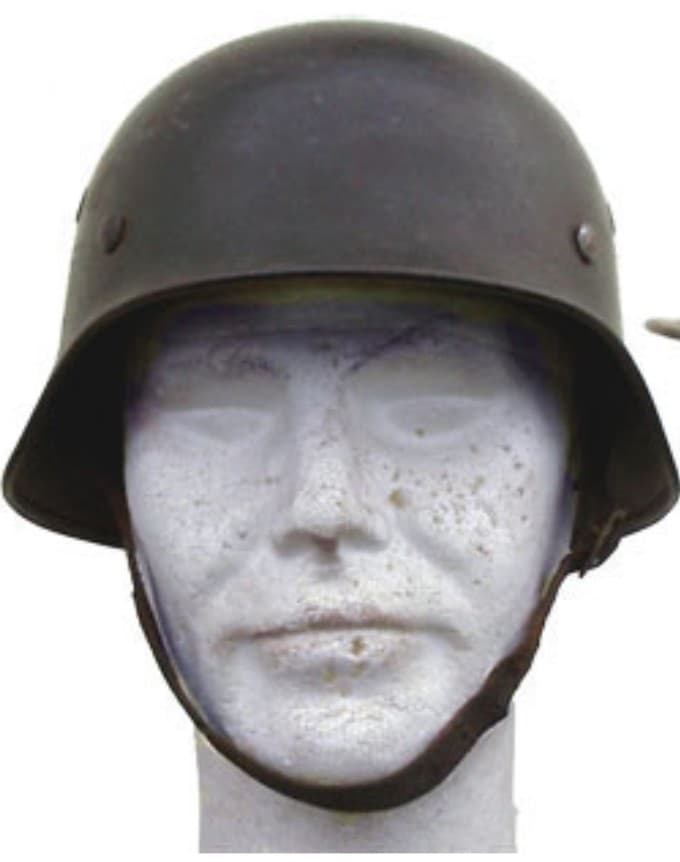
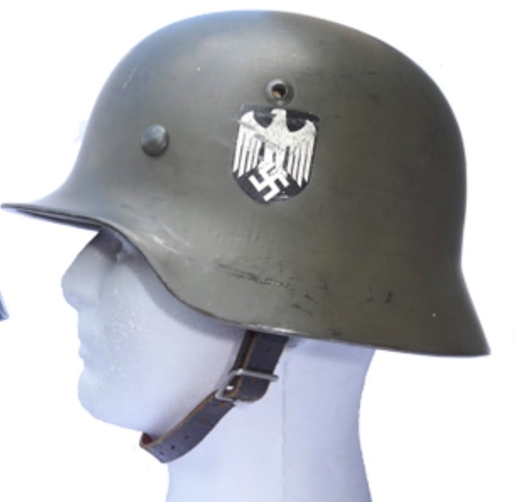
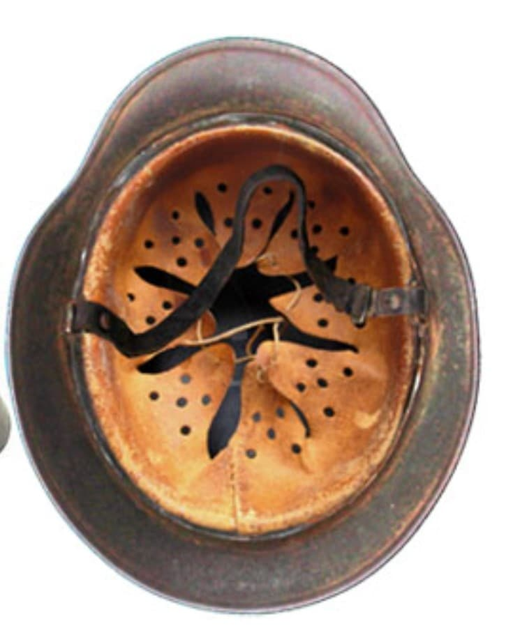

Le casque M40 est une évolution du M35, conçue pour simplifier la production tout en conservant une bonne robustesse. Introduit en 1940, il devient rapidement le casque standard de la Wehrmacht, notamment au sein du Heer et de la Luftwaffe.
Sa caractéristique principale est l’apparition des œillets emboutis directement dans la coque, remplaçant les œillets rapportés du M35.

Le M40 conserve la silhouette du M35 : coque arrondie, rebord roulé, liner cuir à 8 langues et jugulaire en cuir. La différence majeure réside dans les œillets emboutis, visibles sur les flancs du casque.
La peinture devient progressivement plus granuleuse à partir de 1941, afin d’améliorer la résistance et de réduire les reflets.
Les versions Heer et Luftwaffe se distinguent par leurs insignes et parfois par la teinte de peinture.

